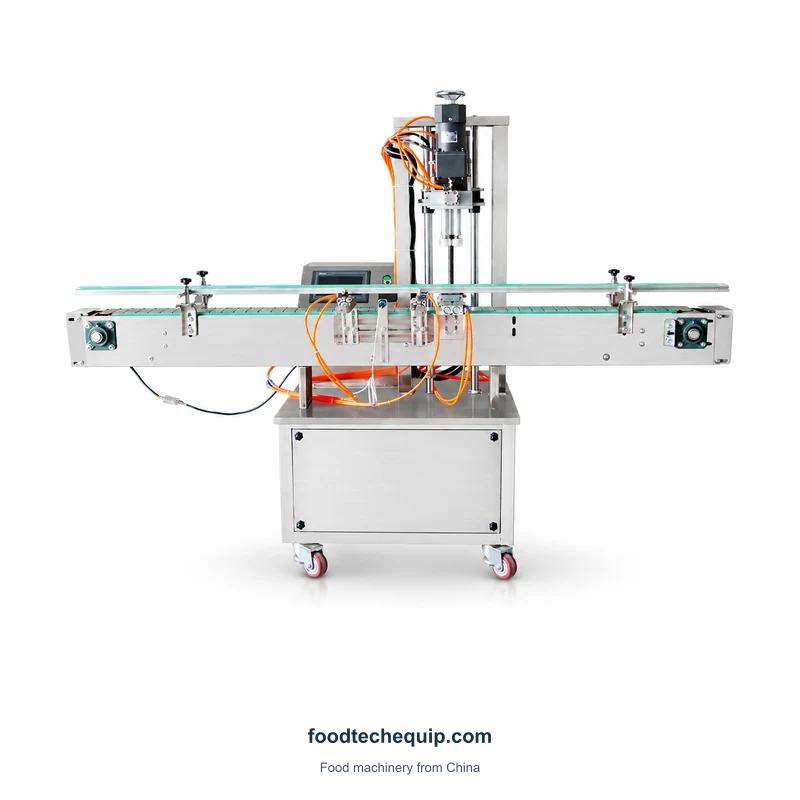

중국에서 공급 및 수출
식품 가공 및 포장 설비
FTE는 중국 쉬저우에서 식품 가공 및 포장 설비를 공급·수출합니다. 혼합, 정량 공급, 충전, 실링, 포장 설비를 비교하고 제품과 포장 치수, 목표 처리량을 알려 주시면 견적을 검토할 수 있습니다.
장비 선택을 넘어선 지원
설치 안내 · 작업자 교육 · 예비 부품 · 원격 지원 서비스
귀사의 프로세스 찾기
모든 115 제품 찾기 ↗공정별 설비
0102 03
03 04
04 0506
0506 07
07
충전 설비
11개 제품소포장 파우치 포장
17개 제품진공 포장
제품 20개봉투 실링
8개 제품
병 캡핑기
제품 1개캔 시밍
6개 제품혼합 설비
제품 1개비식품용 설비
범위를 탐색하십시오
주요 취급 설비
충전, 자루 넣기 및 진공 포장을 위한 장비를 비교해 보십시오. 각 구성에 대한 개별 사양을 확인하십시오.


요구사항에서 다음 단계로
설비 선정 지원
재료, 포장 형식 및 생산 요구 사항을 공유하십시오. 적합한 장비와 필요한 지원을 찾을 수 있도록 도와드립니다.
Food Tech Equipment Co., Ltd. 소개 ↗
FTE가 어떻게 도움이 될 수 있는가 ↗- 01
필요한 것을 알려주세요
재료, 컨테이너 또는 가방 크기, 필요한 생산 능력 및 목적지.
- 02
장비 선택에 대해 논의
관련 모델, 구성 및 호환성을 검토하십시오.
- 03
다음 단계 계획
견적, 설치 안내, 교육 및 예비 부품에 대해 논의하십시오.
대화를 시작하세요
요구 사항 상담 용도에 맞는 설비 찾기
제품과 포장 방식, 목표 처리량을 알려 주세요.